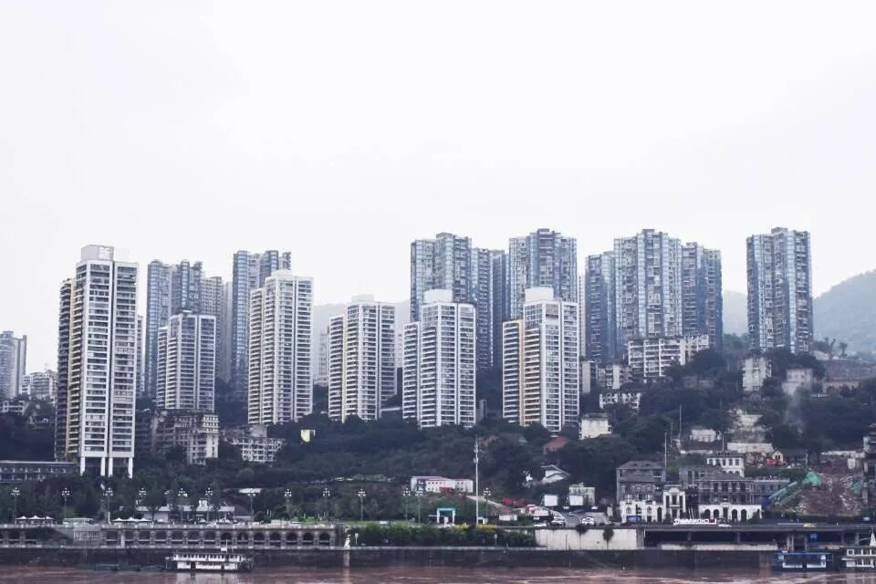
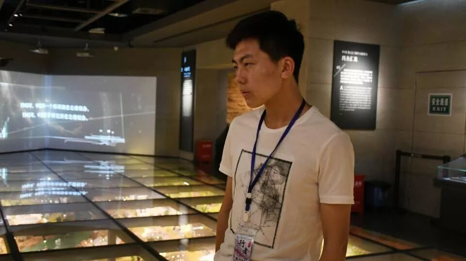
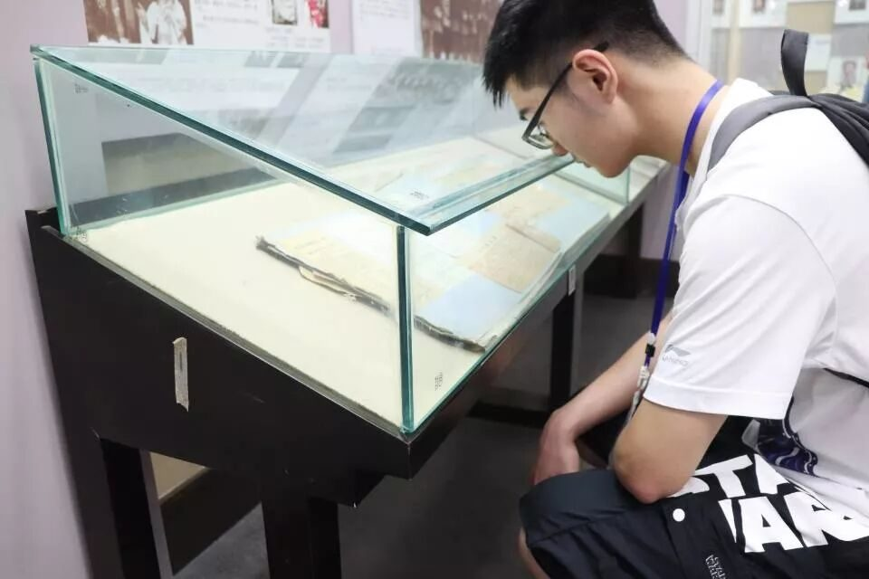
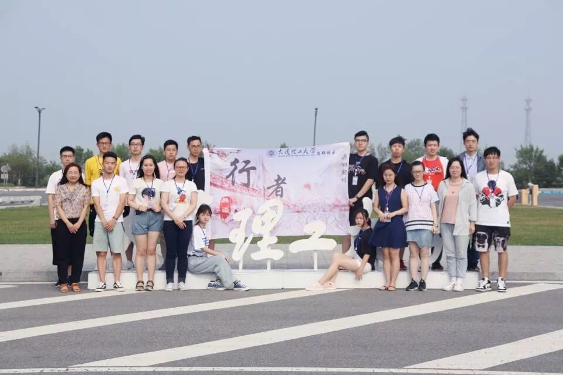

【渝传尺素·七】重庆，我的秒速五厘米
行者 段智然

记得那是一个平常的下午，我正在边吃饭边刷手机，就在我漫不经心的打开QQ消息群的时候，我注意到了几个词：“源洄渝州”、“行者无疆”、“社会实践”。嗯？😲重庆？🤔行者无疆？🤔报了报了！

就这样，
我和行者无疆结下了不解之缘。
😜😜😜😜
说起来，我这是第三次来到重庆。

第一次是小时候去贵州倒火车路过重庆，从重庆站出来之后环绕着重庆站的群山、山上的楼、穿梭的的士、绿色的遮雨棚以及夕阳中的日光在我的脑海里留下了关于重庆的第一幅深黄色的油画。

第二次是在我初中的时候。当时我在重庆市科技馆做了半个月的志愿者。当时我住在大学城，位于一号线的最左端；而科技馆则在小什字站，是一号线的最右端。每天我要坐两次接近一个半小时的地铁，而正是这种日常的通勤让重庆市四通八达的轨道交通给我留下了机器深刻的印象。我在完成志愿者的任务之后把轨道交通的每一条“过山车”都完完整整的坐了一遍，甚至想将来成为一名伟大的地铁司机。😂

重庆在冬日就会化身为雾都，现代化的高楼大厦在浓雾中漂浮，山城的小路在高低起伏，天空中飘落着淅淅小雨，远处亮着灯光的轻轨一闪而过，而空气中则氤氲着缙云山淡淡的花香——她是属于我自己的《秒速五厘米》，她一直在祖国的西南方呼唤着我，让我不管多少年都想回到那里，只是为了再见她一面。


行者无疆，我加入这个学校的新生群的时候就已经听说过。在面试时我十分忐忑，心里在安慰自己佬度这么大自己选不上也很正常。当然最后还是面试上了不然我怎么可能在这里写给重庆的情书。
自己因为大一的时候干的工作主要和文字有关，所以就报了实践团的文字组。说实话，我是第一次当组长，也很怕自己不能合格的完成任务。但是第一次见面会的时候队长就让我早到了半个小时，给我详尽的安排了文字组的任务；而且之后在发老队员给小队员的信的时候，上一届的文字组组长也在信里面把文字组的各种注意事项都说的十分清楚到位；在文字组开始正式接任务之后，队长还有宣传组组长还有其他队员们都给了很多很多很好的建议，尤其是队长几乎是在手把手的教我，让我倍感暖心。

文字组的任务主要是熬夜“埋土”写文字，第二天又要和大家一起早起出去调研，可以说是一个比较辛苦的工作，这也是我在报名文字组的时候就已经做好心理准备的。我们四个组员文字风格几乎是天差地别，😂😂这意味着我们的文字多样性很强，同时也意味着修改和互相适应的难度会比较大，不过好在文字组的小哥哥小姐姐们文字写得好说话又好听，大家都超配合的，我们文字组的任务也能很好的完成。😎


来到行者无疆，
我不仅重新回到了重庆，
也学到了很多只有在
行者无疆才能学到的东西。
作为一个刚刚出道的行者，
我希望行者无疆能继续传播文化，
绽放芳华。
💪💪💪💪

来源丨行者无疆实践团
文字丨段智然
排版丨康艳虎
审核丨邓子孚 段智然
视频丨陈辉
行者无疆实践团
QQ：2758025831

随行者一起认识世界
长按二维码